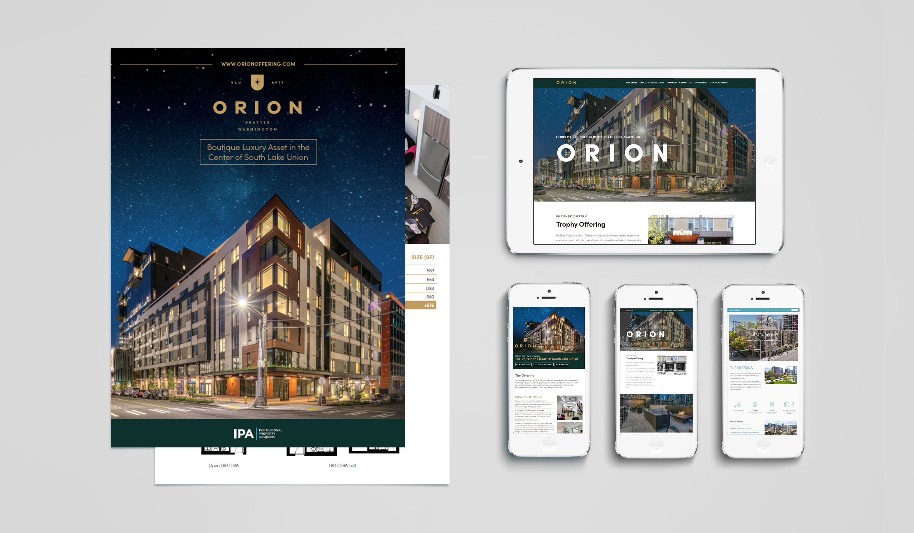
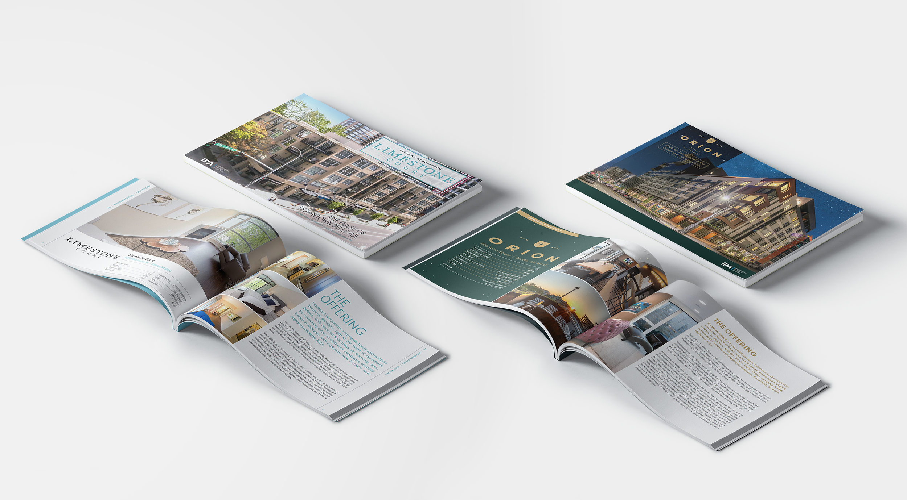
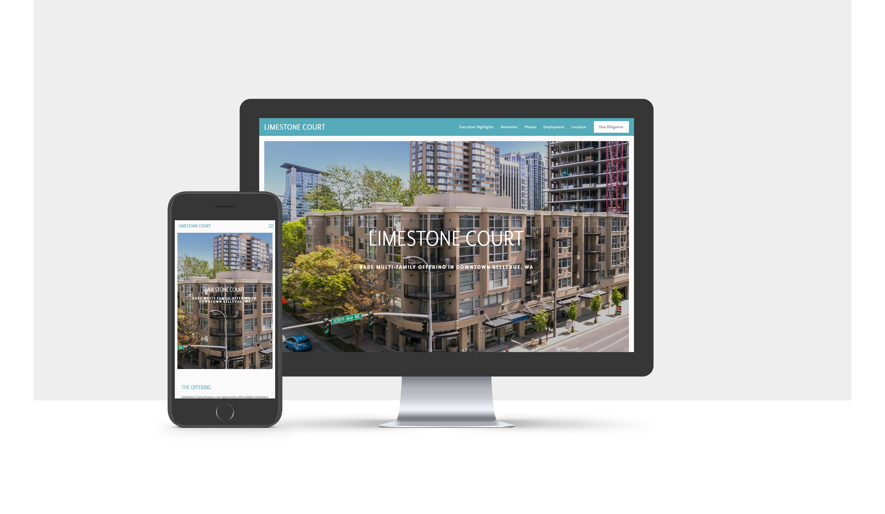
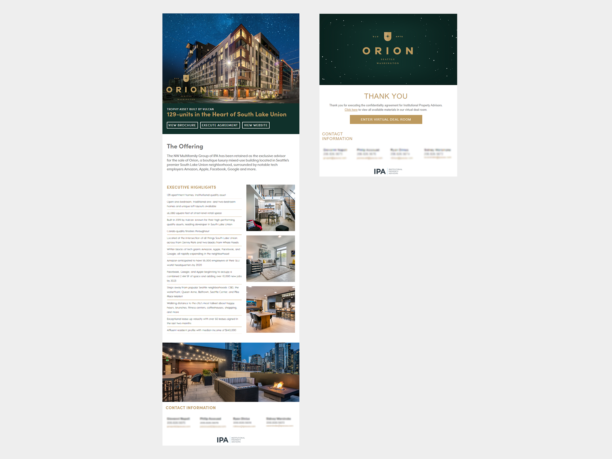
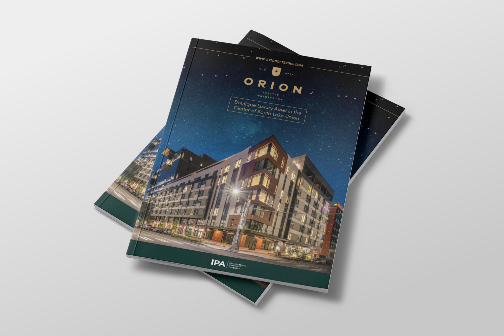

I was brought on to create a streamlined, variable template system to create marketing materials for property listings. The goal was to increase production and train a team to use the system.
This team of brokers was creating each listing from scratch each time; without a library of templates or systems in place, a lot of work was being replicated. Each property listing needed a landing page, 80-page print brochure, and email campaign
I spent the bulk of this design process creating the master InDesign template. First I conducted interviews with the brokers, and reviewed previous marketing materials they had created, as well as looked at examples of marketing materials they liked to learn what they were looking for.
The template has a few default page layouts, but there are simple rules for creating new pages that fit within the simple look and feel. I created workflows for generating maps, graphs, charts, managing an icon library, and selecting stock images for use in these brochures.
I looked into several different CMS options for creating the websites quickly, efficiently, and without requiring extensive knowledge of coding in order to update. We settled on using Squarespace to build our landing pages, and I used some custom CSS to add some features (such as a static nav bar) that we needed for usability.
I created a minimal layout for email flyers for each listing that acted as a teaser and then call for offers for each listing. I kept this simple to make them quick to update, and create simple headers for. By keeping this template simple, this part of the process was quickly transferred to an administrative assistant which freed up more of my time to create more stock pages for the brochure.
I was able to add a new product to the suite midway through the year: a much more simplified brochure. This was meant to be 8-12 pages max, printed quickly, and available for handing out on short notice. The reason the larger brochure is so long is that it contains a lot of financial information that wasn't finalized until very late in the marketing process, which created a situation where we were trying to print books without enough turnaround time before in-person property tours began. With this brochure template, we were able to add in the highlights, and email the PDF of the full brochure at a later date to anyone who needed to see it.
We were able to generate 20 campaigns in the summer/fall of 2019 using this system, the majority of them within 2 months. It was a crunch, but it would have been fully impossible without the asset library I was able to create as a runway in the spring.
